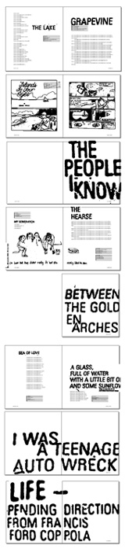

| |
A is for ANTHOLOGY
| |
From broken hearts and first love through to unorthodox parking methods, and protests against stereotypes of cola drinking "yoof", ANTHOLOGY is a window into a new wave of work being churned out in the bedrooms of Australia.
| |
The end result is ANTHOLOGY - a 200-page book published by Pluto Press that features a selection of works received.
Compiled from submissions to the noise festival, ANTHOLOGY showcases new words and pictures by young Australians - a collection full to the brim with energy, irony, iconoclasm and desperation.
The first person to read ANTHOLOGY aside from noise and Pluto Press bods was none other than Richard Fidler who enjoyed it very much:
"...makes you want to loll your tongue around your head in pleasure, like Homer Simpson contemplating a doughnut: largghhllguhhhglll... Well, it does that for me anyway so shut up." - Richard Fidler
ANTHOLOGY will be launched at Sydney's Gleebooks on Monday October 22 at 6pm. For more info visit the Gleebooks website.
Return to the ANTHOLOGY Project Homepage
(Psst... we reckon you'll also be interested in the HQ,POSTCARDS and HOW COMICS CAN CHANGE THE WORLD Projects)
|
|
|